Jessica Gonzalez
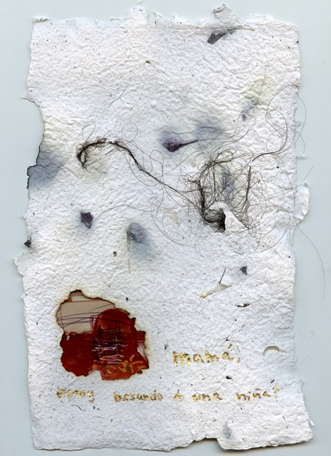 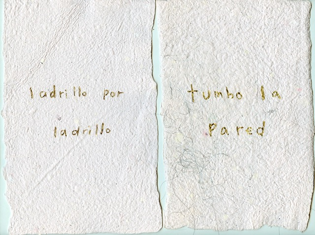
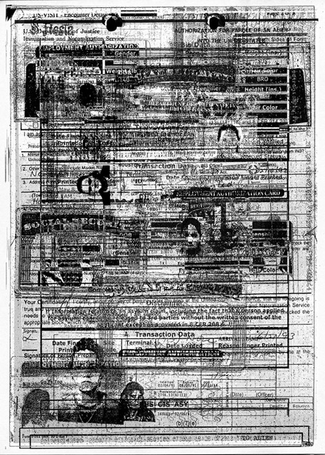
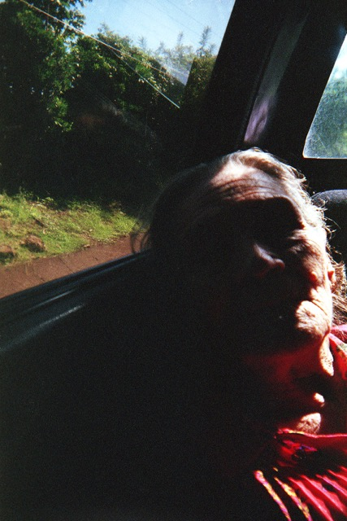
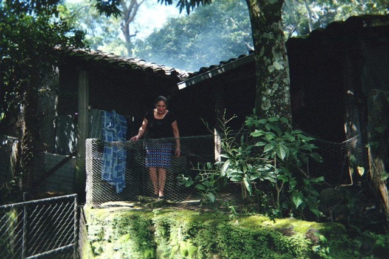
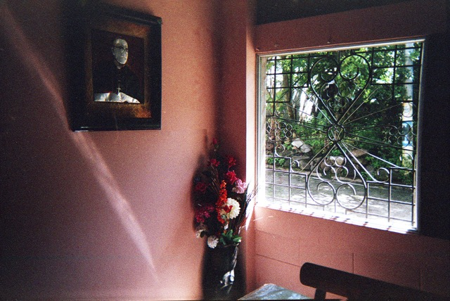
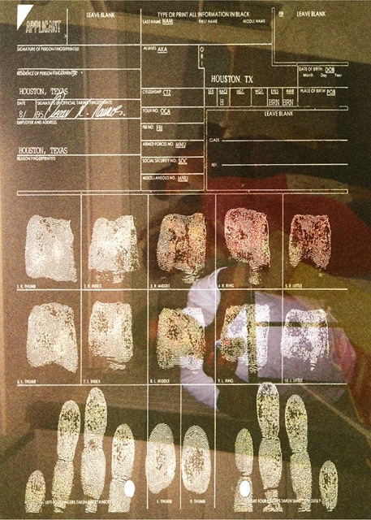
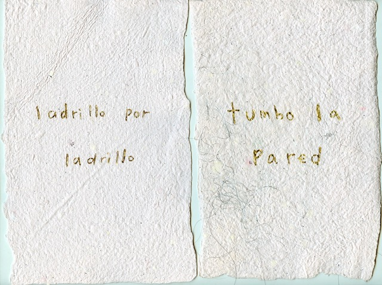
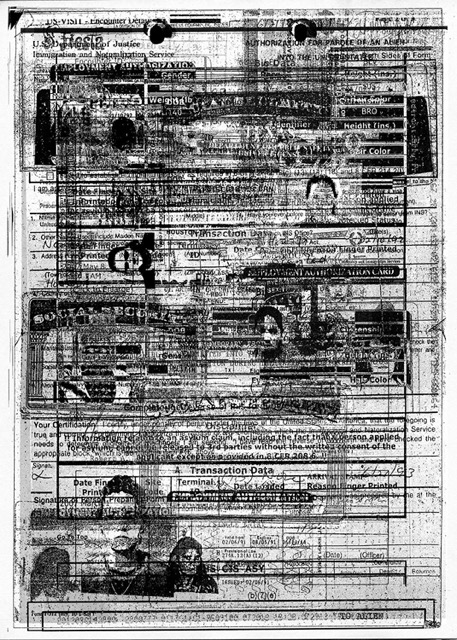
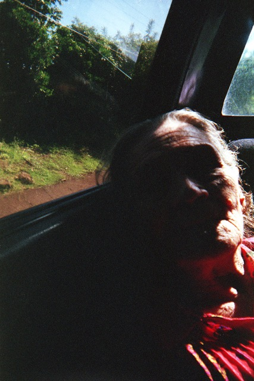
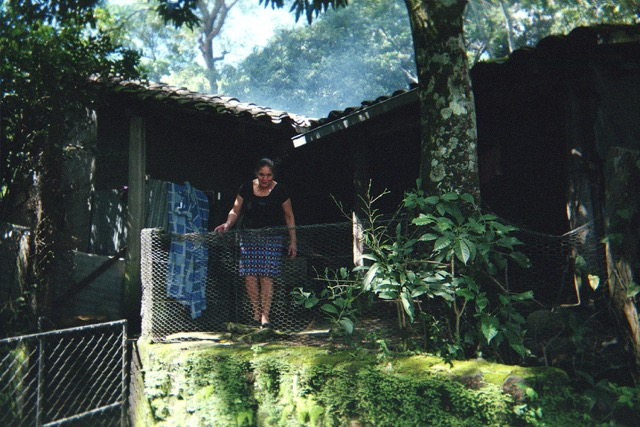
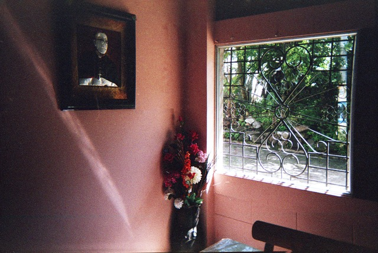
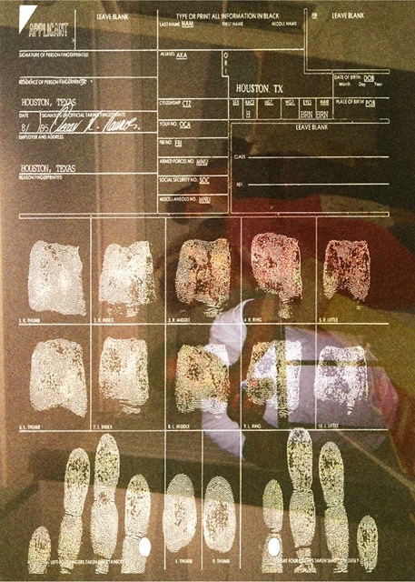
I use traditional archives and the archives of my bloodline to explore conflicts of representation in a post-colonial landscape. By recalling the personal, the political, and the laborious histories impressed within the immigrant body, I reclaim the space within visual culture in which our communities are often absent from or misrepresented. My practice is tasked with repurposing traditional archival practices in favor of what has been passed down, body memory and a tradition of oral histories. These methods of conservation through the bloodline have an intergenerational authorship that traditional archives don't conserve or particularly activate.
This is important for me to explore in my work because a lot of my identity is not reflected in the traditional archive. Throughout my life, I have deconstructed and interrogated memory and recorded history to understand the way my community has navigated a landscape in which they're not in control of their own narrative or perception. I recontextualize the items and stories I work with through the lens of my own experiences to refer to past and current events, problems of visibility, memorialization, violence and immigration. My interest in combining materials from both of these sources comes from the desire to project and explore the intricacies that are produced and the space that is demanded when archives of the bloodline and traditional archives are put in conversation with each other.